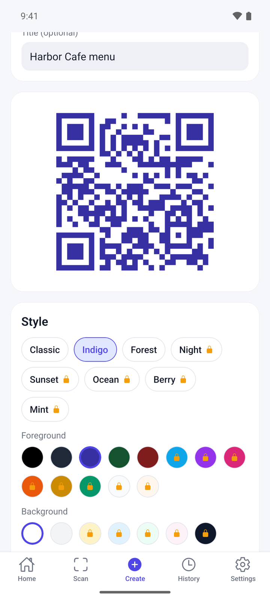

What it does
QR & Barcode Toolkit สแกน QR โค้ดและบาร์โค้ดด้วยกล้องหรือจากรูปภาพ และแสดงว่าข้างในมีอะไรก่อนที่คุณจะทำอะไรต่อ คุณยังสร้าง QR โค้ดและบาร์โค้ดของตัวเองได้ แล้วบันทึกเป็นรูปภาพหรือแชร์ให้คนอื่น แอปรองรับ 21 ภาษาและใช้ภาษาตามโทรศัพท์ของคุณ
- อ่านโค้ดในเครื่องของคุณ ลิงก์จะไม่เปิดเองเด็ดขาด
- ไม่ต้องสมัครบัญชี ประวัติอยู่ในโทรศัพท์ของคุณเท่านั้น
- อ่าน QR โค้ดและบาร์โค้ด 12 ประเภท เช่น EAN-13, UPC-A และ Code 128
- ใช้ฟรีโดยมีโฆษณา ซื้อ Premium ครั้งเดียวเพื่อเอาโฆษณาออกและได้ตัวเลือกรูปแบบเพิ่ม
Get started
- เปิด QR & Barcode Toolkit หน้า Home มีทางลัดสี่ปุ่ม คือ Scan QR, Scan Barcode, Create QR และ Create Barcode
- แตะ Scan QR ครั้งแรกให้แตะ Allow camera แล้วอนุญาตการใช้กล้องเมื่อ Android ถาม
- ถ้าไม่ต้องการใช้กล้อง ให้แตะ Scan from an image instead แล้วเลือกรูป วิธีนี้ไม่ต้องให้สิทธิ์เข้าถึงคลังรูปภาพทั้งหมด

Scan a code
- แตะ Scan ที่แถบด้านล่าง หรือแตะทางลัดสแกนในหน้า Home
- ด้านบน เลือก QR Code หรือ Barcode
- ชี้กล้องไปที่โค้ด ถ้าเป็นบาร์โค้ดให้อยู่ในกรอบ
- ถ้าที่มืด ให้แตะปุ่มไฟฉาย ถ้าต้องการอ่านโค้ดจากรูป ให้แตะปุ่มรูปภาพแล้วเลือกรูป
- หน้า Scan Result จะเปิดเมื่ออ่านโค้ดได้ และบอกประเภทของเนื้อหา เช่น Website, Wi-Fi, Contact หรือ Product
- แตะ Copy content หรือ Share as text หรือแตะ Scan another เพื่อกลับไปที่กล้อง
Check a link before you open it
- สแกนโค้ดที่เป็นที่อยู่เว็บ ผลลัพธ์จะแสดงชื่อเว็บไซต์และที่อยู่แบบเต็ม
- อ่านคำเตือน (ถ้ามี) แอปจะเตือนเมื่อพบลิงก์ที่ไม่เข้ารหัส (http) ลิงก์แบบย่อ ที่อยู่ IP ดิบ ข้อมูลล็อกอินที่ซ่อนอยู่ และตัวอักษรที่หน้าตาคล้ายกัน
- แตะ Open link เฉพาะเมื่อคุณไว้ใจเว็บไซต์นั้น แล้วแตะ Open เพื่อยืนยัน

โค้ดประเภทอื่นจะมีปุ่มของตัวเอง ได้แก่ Compose email, Call, Send message, Open in Maps หรือ Search the web ทุกปุ่มจะถามก่อนออกจากแอป
Read a Wi-Fi code
- สแกน QR โค้ด Wi-Fi ผลลัพธ์จะแสดง Network, Security และ Password
- แตะไอคอนรูปตาเพื่อแสดงรหัสผ่าน
- แตะไอคอนคัดลอกที่อยู่ข้างรหัสผ่าน
- เปิดการตั้งค่า Wi-Fi ของโทรศัพท์ แล้วเชื่อมต่อเครือข่ายด้วยรหัสผ่านที่คัดลอกไว้ แอปไม่ได้เชื่อมต่อให้คุณ

Create a QR code
- แตะ Create แล้วเลือก QR Code
- ใต้ Content type เลือก Website, Text, Wi-Fi, Email, Phone, SMS, Contact หรือ Location
- กรอกข้อมูลในช่อง QR โค้ดจะปรากฏทันทีที่ข้อมูลถูกต้อง กรอก Title (optional) ถ้าต้องการตั้งชื่อไว้ในประวัติ
- ใต้ Style เลือกเทมเพลต Classic, Indigo หรือ Forest คุณยังเปลี่ยนสี Foreground และ Background รวมถึงระดับ Error correction ได้
- แตะ Save to history เพื่อเก็บไว้ แตะ Share เพื่อส่งรูป หรือแตะ Save image เพื่อบันทึกลงแกลเลอรี

ตัวเลือกที่มีรูปกุญแจเป็นส่วนของ Premium
Create a barcode
- แตะ Create แล้วเลือก Barcode
- ใต้ Format เลือก EAN-13, EAN-8, UPC-A, Code 128, Code 39 หรือ ITF-14
- พิมพ์ Value บรรทัดใต้ช่องจะบอกว่ารูปแบบนั้นรับข้อมูลแบบไหน สำหรับรหัสสินค้า แอปจะเติมเลขตรวจสอบให้ถ้าคุณไม่ได้ใส่
- กรอก Title (optional) ถ้าต้องการตั้งชื่อ
- แตะ Save to history, Share หรือ Save image

Find, reuse and delete codes
- แตะ History จะแสดงรายการโค้ดที่คุณสแกนและสร้างไว้
- พิมพ์ในช่อง Search หรือกรองด้วย All, Scanned, Created, Favorites, Any type, QR และ Barcode
- แตะรูปดาวที่แถวใดก็ได้เพื่อเพิ่มลงรายการโปรด
- แตะที่แถวเพื่อเปิด Details จากตรงนั้นคุณแตะ Copy content, Share as text หรือ Delete ได้ QR โค้ดและรูปแบบบาร์โค้ดที่แอปสร้างได้จะแสดงภาพโค้ดพร้อม Share image และ Edit / reuse ด้วย
- ถ้าต้องการล้างรายการ ให้แตะไอคอนถังขยะด้านบน แล้วแตะ Clear รายการโปรดจะยังอยู่
Change settings
- แตะ Settings
- ปิด Save scans to history ถ้าไม่ต้องการเก็บประวัติการสแกน
- เปิดหรือปิด Haptic feedback
- เปิด Keep Wi-Fi passwords in history เฉพาะเมื่อคุณต้องการเก็บรหัสผ่านไว้ ค่าเริ่มต้นคือปิด
- แตะ Language เพื่อเลือกภาษาของแอป โดยปกติแอปจะใช้ภาษาตามโทรศัพท์ของคุณ
- แตะ Clear all history แล้วแตะ Delete all เพื่อลบการสแกนและโค้ดที่สร้างทั้งหมด รวมถึงรายการโปรด
Premium
Premium เป็นการจ่ายครั้งเดียว ไม่ใช่การสมัครสมาชิก เปิด Settings แล้วแตะ Go Premium หรือแตะ See plans ในหน้า Home สิ่งที่คุณได้รับ:
- ไม่มีโฆษณา
- สีที่ปรับเองได้ เทมเพลตพรีเมียม และโลโก้ใน QR โค้ด
- ประวัติและรายการโปรดไม่จำกัด
- ส่งออกที่ขนาด 1024 px และ 2048 px
ถ้ายังไม่ได้ซื้อ Premium การแตะเทมเพลต สี หรือ Add logo ที่ล็อกอยู่ อาจมีตัวเลือก Watch an ad ซึ่งจะปลดล็อกตัวเลือกรูปแบบเหล่านี้จนกว่าคุณจะปิดแอป ถ้าเคยซื้อ Premium แล้ว ให้แตะ Restore purchases ใน Settings
Questions
แอปเปิดลิงก์เองหรือไม่ ไม่ แอปจะแสดงที่อยู่และคำเตือน (ถ้ามี) ก่อน ลิงก์จะเปิดก็ต่อเมื่อคุณแตะ Open link และยืนยันแล้วเท่านั้น
อ่านโค้ดอะไรได้บ้าง QR, EAN-13, EAN-8, UPC-A, UPC-E, Code 128, Code 39, Code 93, Codabar, ITF-14, PDF417, Data Matrix และ Aztec
ทำไมรหัสผ่าน Wi-Fi หายไปจากประวัติ แอปจะลบรหัสผ่าน Wi-Fi ออกก่อนบันทึกโค้ด ถ้าต้องการเก็บไว้ ให้เปิด Keep Wi-Fi passwords in history ใน Settings ก่อนสแกนหรือสร้างโค้ด
เก็บโค้ดได้กี่รายการ เวอร์ชันฟรีเก็บการสแกนล่าสุด 100 รายการ โค้ดที่สร้างล่าสุด 100 รายการ และรายการโปรดได้สูงสุด 10 รายการ History จะบอกเมื่อรายการของเวอร์ชันฟรีเต็ม และรายการใหม่จะเข้าไปแทนที่รายการเก่าสุด รายการโปรดจะไม่ถูกลบเมื่อรายการเต็ม Premium ไม่จำกัดจำนวน
มีโหมดมืดไหม มี แอปใช้ธีมสว่างหรือมืดตามโทรศัพท์ของคุณ
Privacy
อ่านโค้ดในเครื่องของคุณ และประวัติอยู่ในโทรศัพท์ของคุณเท่านั้น เวอร์ชันฟรีแสดงโฆษณาจาก Google AdMob อ่านนโยบายความเป็นส่วนตัวฉบับเต็มได้ที่นี่